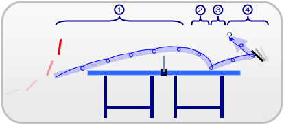

Table tennis, also known as ping-pong, is a sport in which two or four players hit a lightweight ball back and forth across a table using small rackets. The game takes place on a hard table divided by a net. Except for the initial serve, the rules are generally as follows: players must allow a ball played toward them to bounce one time on their side of the table, and must return it so that it bounces on the opposite side at least once. A point is scored when a player fails to return the 7 ball within the rules. Play is fast and demands quick reactions. Spinning the ball alters its trajectory and limits an opponent's options, giving the hitter a great advantage.
Table tennis is governed by the worldwide organization International Table Tennis Federation (ITTF), founded in 1926. ITTF currently includes 226 member associations. The table tennis official rules are specified in the ITTF handbook. Table tennis has been an Olympic sport since 1988, with several event categories. From 1988 until 2004, these were men's singles, women's singles, men's doubles and women's doubles. Since 2008, a team event has been played instead of the doubles.
The sport originated in Victorian England, where it was played among the upper-class as an after-dinner parlour game. It has been suggested that makeshift versions of the game were developed by British military officers in India in around 1860s or 1870s, who brought it back with them. A row of books stood up along the center of the table as a net, two more books served as rackets and were used to continuously hit a golf-ball.
The name "ping-pong" was in wide use before British manufacturer J. Jaques & Son Ltd trademarked it in 1901. The name "ping-pong" then came to describe the game played using the rather expensive Jaques's equipment, with other manufacturers calling it table tennis. A similar situation arose in the United States, where Jaques sold the rights to the "ping-pong" name to Parker Brothers. Parker Brothers then enforced its trademark for the term in the 1920s making the various associations change their names to "table tennis" instead of the more common, but trademarked, term.
The next major innovation was by James W. Gibb, a British enthusiast of table tennis, who discovered novelty celluloid balls on a trip to the US in 1901 and found them to be ideal for the game. This was followed by E.C. Goode who, in 1901, invented the modern version of the racket by fixing a sheet of pimpled, or stippled, rubber to the wooden blade. Table tennis was growing in popularity by 1901 to the extent that tournaments were being organized, books being written on the subject, and an unofficial world championship was held in 1902.
In 1921, the Table Tennis Association was founded, and in 1926 renamed the English Table Tennis Association. The International Table Tennis Federation (ITTF) followed in 1926. London hosted the first official World Championships in 1926. In 1933, the United States Table Tennis Association, now called USA Table Tennis, was formed.
In the 1930s, Edgar Snow commented in Red Star Over China that the Communist forces in the Chinese Civil War had a "passion for the English game of table tennis" which he found "bizarre". On the other hand, the popularity of the sport waned in 1930s Soviet Union, partly because of the promotion of team and military sports, and partly because of a theory that the game had adverse health effects.
In the 1950s, paddles that used a rubber sheet combined with an underlying sponge layer changed the game dramatically, introducing greater spin and speed. These were introduced to Britain by sports goods manufacturer S.W. Hancock Ltd. The use of speed glue increased the spin and speed even further, resulting in changes to the equipment to "slow the game down". Table tennis was introduced as an Olympic sport at the Olympics in 1988.
The international rules specify that the game is played with a sphere having a mass of 2.7 grams (0.095 oz) and a diameter of 40 millimetres (1.57 in). The rules say that the ball shall bounce up 24–26 cm (9.4–10.2 in) when dropped from a height of 30.5 cm (12.0 in) onto a standard steel block thereby having a coefficient of restitution of 0.89 to 0.92. Balls are now made of a polymer instead of celluloid as of 2015, colored white or orange, with a matte finish. The choice of ball color is made according to the table color and its surroundings. For example, a white ball is easier to see on a green or blue table than it is on a grey table. Manufacturers often indicate the quality of the ball with a star rating system, usually from one to three, three being the highest grade. As this system is not standard across manufacturers, the only way a ball may be used in official competition is upon ITTF approval (the ITTF approval can be seen printed on the ball).
The 40 mm ball was introduced after the end of the 2000 Summer Olympics.[19] This created some controversies. Then World No 1 table tennis professional Vladimir Samsonov threatened to pull out of the World Cup, which was scheduled to debut the new regulation ball on October 12, 2000.
The table is 2.74 m (9.0 ft) long, 1.525 m (5.0 ft) wide, and 76 cm (2.5 ft) high with any continuous material so long as the table yields a uniform bounce of about 23 cm (9.1 in) when a standard ball is dropped onto it from a height of 30 cm (11.8 in), or about 77%. The table or playing surface is uniformly dark coloured and matte, divided into two halves by a net at 15.25 cm (6.0 in) in height. The ITTF approves only wooden tables or their derivates. Concrete tables with a steel net or a solid concrete partition are sometimes available in outside public spaces, such as parks.

Players are equipped with a laminated wooden racket covered with rubber on one or two sides depending on the grip of the player. The ITTF uses the term "racket", though "bat" is common in Britain, and "paddle" in the U.S. and Canada.
The wooden portion of the racket, often referred to as the "blade", commonly features anywhere between one and seven plies of wood, though cork, glass fiber, carbon fiber, aluminum fiber, and Kevlar are sometimes used. According to the ITTF regulations, at least 85% of the blade by thickness shall be of natural wood.[29] Common wood types include balsa, limba, and cypress or "hinoki", which is popular in Japan. The average size of the blade is about 17 centimetres (6.7 in) long and 15 centimetres (5.9 in) wide, although the official restrictions only focus on the flatness and rigidity of the blade itself, these dimensions are optimal for most play styles.
Table tennis regulations allow different surfaces on each side of the racket. Various types of surfaces provide various levels of spin or speed, and in some cases they nullify spin. For example, a player may have a rubber that provides much spin on one side of their racket, and one that provides no spin on the other. By flipping the racket in play, different types of returns are possible. To help a player distinguish between the rubber used by his opposing player, international rules specify that one side must be red while the other side must be black. The player has the right to inspect their opponent's racket before a match to see the type of rubber used and what colour it is. Despite high speed play and rapid exchanges, a player can see clearly what side of the racket was used to hit the ball. Current rules state that, unless damaged in play, the racket cannot be exchanged for another racket at any time during a match.
Backspin is where the bottom half of the ball is rotating away from the player, and is imparted by striking the base of the ball with a downward movement.[56] At the professional level, backspin is usually used defensively in order to keep the ball low. Backspin is commonly employed in service because it is harder to produce an offensive return, though at the professional level most people serve sidespin with either backspin or topspin. Due to the initial lift of the ball, there is a limit on how much speed with which one can hit the ball without missing the opponent's side of the table. However, backspin also makes it harder for the opponent to return the ball with great speed because of the required angular precision of the return. Alterations are frequently made to regulations regarding equipment in an effort to maintain a balance between defensive and offensive spin choices. It is actually possible to smash with backspin offensively, but only on high balls that are close to the net.
The topspin stroke has a smaller influence on the first part of the ball-curve. Like the backspin stroke, however, the axis of spin remains roughly perpendicular to the trajectory of the ball thus allowing for the Magnus effect to dictate the subsequent curvature. After the apex of the curve, the ball dips downwards as it approaches the opposing side, before bouncing. On the bounce, the topspin will accelerate the ball, much in the same way that a wheel which is already spinning would accelerate upon making contact with the ground. When the opponent attempts to return the ball, the topspin causes the ball to jump upwards and the opponent is forced to compensate for the topspin by adjusting the angle of his or her racket. This is known as "closing the racket".
The speed limitation of the topspin stroke is minor compared to the backspin stroke. This stroke is the predominant technique used in professional competition because it gives the opponent less time to respond. In table tennis topspin is regarded as an offensive technique due to increased ball speed, lower bio-mechanical efficiency and the pressure that it puts on the opponent by reducing reaction time. (It is possible to play defensive topspin-lobs from far behind the table, but only highly skilled players use this stroke with any tactical efficiency.) Topspin is the least common type of spin to be found in service at the professional level, simply because it is much easier to attack a top-spin ball that is not moving at high speed.
This type of spin is predominantly employed during service, wherein the contact angle of the racket can be more easily varied. Unlike the two aforementioned techniques, sidespin causes the ball to spin on an axis which is vertical, rather than horizontal. The axis of rotation is still roughly perpendicular to the trajectory of the ball. In this circumstance, the Magnus effect will still dictate the curvature of the ball to some degree. Another difference is that unlike backspin and topspin, sidespin will have relatively very little effect on the bounce of the ball, much in the same way that a spinning top would not travel left or right if its axis of rotation were exactly vertical. This makes sidespin a useful weapon in service, because it is less easily recognized when bouncing, and the ball "loses" less spin on the bounce. Sidespin can also be employed in offensive rally strokes, often from a greater distance, as an adjunct to topspin or backspin. This stroke is sometimes referred to as a "hook". The hook can even be used in some extreme cases to circumvent the net when away from the table.
| Name | Gender | Nationality | Times won | |||
|---|---|---|---|---|---|---|
| Olympics | World Championships | World Cup | ||||
| Jan-Ove Waldner | Male | 1 (1992) | 2 (1989, 1997) | 1 (1990) | ||
| Deng Yaping | Female | 2 (1992, 1996) | 3 (1991, 1995, 1997) | 1 (1996) | ||
| Liu Guoliang | Male | 1 (1996) | 1 (1999) | 1 (1996) | ||
| Kong Linghui | Male | 1 (2000) | 1 (1995) | 1 (1995) | ||
| Wang Nan | Female | 1 (2000) | 3 (1999, 2001, 2003) | 4 (1997, 1998, 2003, 2007) | ||
| Zhang Yining | Female | 2 (2004, 2008) | 2 (2005, 2009) | 4 (2001, 2002, 2004, 2005) | ||
| Zhang Jike | Male | 1 (2012) | 2 (2011, 2013) | 2 (2011, 2014) | ||
| Li Xiaoxia | Female | 1 (2012) | 1 (2013) | 1 (2008) | ||
| Ding Ning | Female | 1 (2016) | 3 (2011, 2015, 2017) | 2 (2011, 2014) | ||
| Ma Long | Male | 1 (2016) | 3 (2015, 2017, 2019) | 2 (2012, 2015) | ||